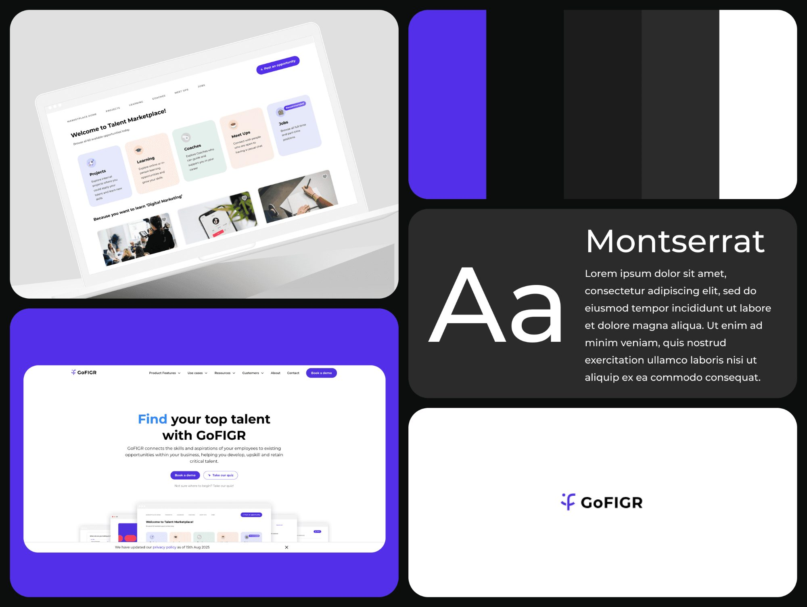
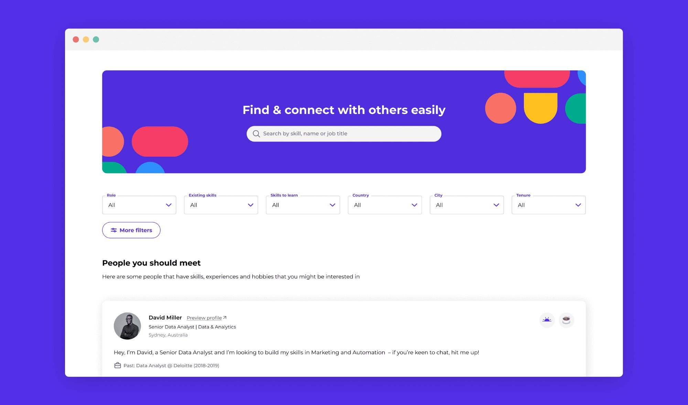
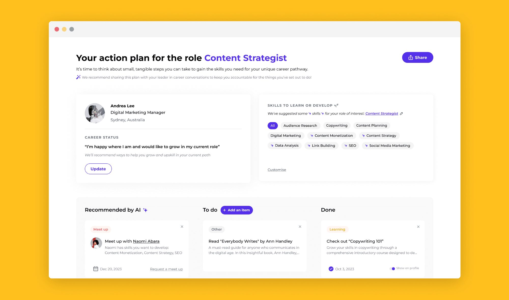
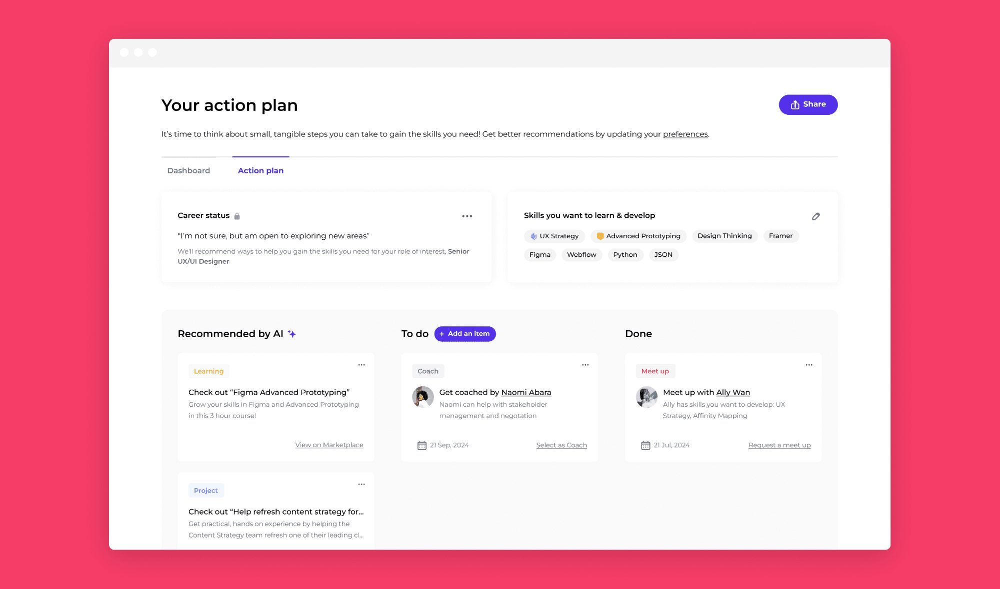
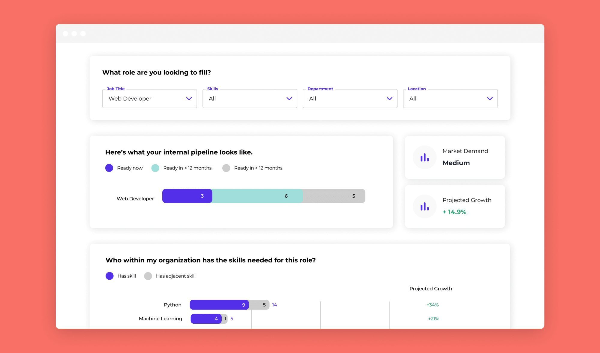

GoFIGR
Shows HR leaders, task by task, how AI is reshaping their company.

Context
GoFIGR is a workforce intelligence platform. It shows HR leaders which tasks AI will automate, augment or leave alone, and what to do about hiring, redeployment and skills.
The problem
AI disruption had moved from a future concern to a present one, yet companies were making workforce decisions blind. Reports said jobs would change, not which roles, which tasks, how fast, or what to do.
Research
How
What we learned
Confidence over data
Leaders take this to their board. It has to read as considered.
A loaded message
High AI exposure can feel like a threat to the employee reading it.
Six tools, one mind
Each module has its own mental model.
Who it's for
Head of people analytics
Needs board-ready answers, fast.
Employee
Wants to know where their role is heading, and how to grow.
Structure and direction
One system for six modules
Montserrat, a deep violet core and a bold shape language. Six modules, each with its own data model, built to feel like one product.

The design
People search
Filter by role, skills, country and tenure. Every match comes with a reason to meet.

Action plan for a role
Career status, skills to grow and AI-recommended next steps, all on one screen. Shareable with a manager.

Direction, not displacement
A to-do board of courses, coaches and meet-ups. High AI exposure reads as a path forward.

Internal pipeline
Who is ready now, who is close, and who already has the skills. Market demand and projected growth alongside.

Key decisions
Built for the boardroom
Every score reads like a considered decision.
Direction, not displacement
Career Upgrade frames AI exposure as a path forward.
One system, six tools
Six data models that still feel like one product.
Outcome
Want this depth
on your product?
20 minutes. You leave with a plan, even if we don't work together.
Replies within 24 hours.